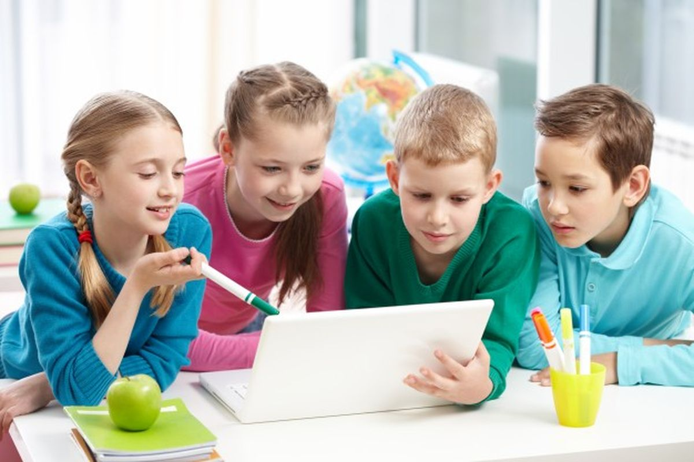
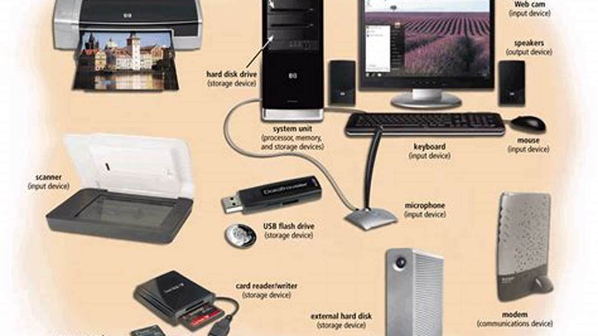

1. Sejarah Komputer

Komputer pertama kali dikembangkan pada abad ke-20. Salah satu generasi awal adalah ENIAC yang sangat besar ukurannya...
2. Pengenalan Teknologi Informasi dan Komunikasi (TIK)
TIK mencakup semua teknologi yang digunakan untuk mengolah, menyimpan, dan menyampaikan informasi, seperti komputer, internet, dan perangkat mobile...
3. Komponen-Komponen Komputer
Komponen utama komputer terdiri dari perangkat keras (hardware) seperti CPU, RAM, dan monitor serta perangkat lunak (software)...
Kuis: Seberapa Paham Kamu?
Pertanyaan: Apa yang termasuk perangkat keras komputer?